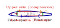
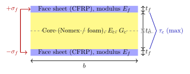

Chapter 4: Drone Airframe and Structures¶
4.1 Drone Airframe and Structures¶
The airframe of an unmanned aerial vehicle (UAV) is the primary load-carrying skeleton that supports all aerodynamic, inertial, and ground loads throughout the vehicle’s operational life. Unlike manned aircraft, UAV airframes must simultaneously satisfy contradictory requirements: minimum mass for endurance, sufficient stiffness for aeroelastic stability, adequate toughness for autonomous recovery operations, and geometric precision for low-observability coatings. This chapter presents the underlying structural mechanics, material science, manufacturing methods, and analytical tools necessary to design and certify a UAV airframe from preliminary concept through production release.
4.2 Structural Design Philosophy¶
4.2.1 Design Load Definitions¶
Every structural component must be sized against a defined design load that captures the worst credible combination of aerodynamic, inertial, propulsive, and ground-reaction forces. Three load levels govern the structural design process.
Limit load (LL) is the maximum load the structure is expected to experience in service without permanent deformation. The structure must carry limit load with no yielding or permanent set; it must remain elastic throughout.
Ultimate load (UL) is the product of limit load and the safety factor \(\gamma\):
The structure must sustain ultimate load for at least three seconds without collapse; permanent deformation is acceptable. Two safety factor regimes are standard:
-
Military UAVs (MIL-HDBK-516C, DEF-STAN 00-970): \(\gamma = 1.5\)
-
Civil UAVs (EASA CS-UAS, FAA AC 21.17-2): \(\gamma = 2.0\) for Category C and above, reflecting lower structural inspection confidence and remotely-piloted risk assumptions.
Additional scatter factors (\(k_s = 1.15\)–\(1.25\)) account for material property scatter, environmental degradation, and manufacturing variability in composite structures, resulting in a combined safety factor:
where \(k_\text{env} = 1.1\)–\(1.2\) for composites exposed to temperature–moisture cycling.
4.2.2 Load Paths¶
A load path describes the continuous chain of structural elements through which an externally applied force is resolved into reactions at the aircraft’s centre of gravity (CG) and, ultimately, at the attachment points of propulsion, undercarriage, and payload. Efficient structural design demands the shortest, most direct load paths with minimum eccentricity to avoid secondary bending.
Wing aerodynamic lift \(L\) generates a distributed pressure load on the skin. The skin transfers shear into the wing ribs; the ribs transfer bending and shear into the front and rear spars; the spars carry the bending moment and shear as a box beam into the carry-through structure at the fuselage centreline. The root fitting transmits bending moment \(M_r\) and shear \(V_r\) into the fuselage frames, which in turn deliver the resultant through the fuselage skin to the CG station. Propulsive thrust \(T\) travels from the motor mount through the motor-mount frame, along the boom or fuselage keel, to the main bulkhead, and thence to the CG. Ground reactions at landing gear are channelled through gear-leg fittings into the primary keel or main spar carry-through. Any break in this chain forces load to find an alternative, longer path—introducing stress concentrations and weight penalties.
4.2.3 Mass Budget¶
Airframe mass fraction \(f_\text{af}\) is the ratio of empty airframe mass \(m_\text{af}\) to maximum take-off weight (MTOW):
Typical values span a wide range depending on mission and technology readiness:
| UAV Class | MTOW (kg) | \(f_\text{af}\) | Primary material | Notes |
|---|---|---|---|---|
| Nano/micro quadrotor | \(<0.1\) | 0.30–0.45 | Injection-moulded PA/ABS | Motors dominate mass |
| Racing FPV quad | 0.5–1 | 0.20–0.30 | Carbon fibre pultruded arms | High-G crash loading |
| Small fixed-wing MALE | 5–25 | 0.12–0.18 | GFRP/CFRP sandwich | Fuel/battery dominates |
| Medium MALE (MQ-9) | 4765 | 0.15–0.20 | CFRP/Al hybrid | — |
| HALE (Global Hawk) | 14628 | 0.12–0.16 | CFRP primary structure | — |
| Combat UCAV | 5000–15000 | 0.18–0.25 | CFRP with stealth coatings | Stealth adds mass |
4.2.4 Structural Efficiency Metrics¶
The structural index \(\phi\) relates applied load to the planform area of the loaded panel, providing a load-intensity measure independent of scale:
Specific strength \(\hat{\sigma}\) and specific stiffness \(\hat{E}\) normalise material properties by density:
Minimum-mass beam design under bending constrains the section modulus per unit mass, leading to the material index \(M_b = \sigma_\text{y}^{2/3}/\rho\) for strength-limited beams and \(M_s = E^{1/2}/\rho\) for deflection-limited ones (Ashby, 2011). CFRP consistently scores 3–5\(\times\) higher than aluminium on both indices, which explains its dominance in high-performance UAV primary structure.
4.2.5 Structural Design Philosophies¶
Three philosophies govern how airframe structures are designed to accommodate damage:
Safe-life design: The structure is sized so that the initiation and growth of cracks to critical size takes longer than the design service life multiplied by a retirement scatter factor (typically 4). The component is retired at its safe-life limit regardless of observed condition. Simple to certify, but wasteful: parts may have substantial residual life at retirement. Used in small UAVs with non-inspectable structure.
Fail-safe design: The structure contains multiple load paths, so that the failure of any single element does not precipitate total structural failure. The remaining structure must carry limit load until the next inspection. Requires redundant load paths and periodic inspection, but allows components to remain in service longer.
Damage-tolerant design: Based on fracture mechanics, this philosophy accepts the existence of cracks up to a detectable size \(a_\text{det}\) and ensures that the time for a crack to grow from \(a_\text{det}\) to critical size \(a_\text{cr}\) is at least twice the inspection interval. Required by MIL-STD-1530D for all primary structure on military aircraft including combat UAVs. CFRP structures require adaptation of the methodology to account for delamination rather than metallic crack growth.
4.3 Fuselage Design Concepts¶
4.3.1 Monocoque Construction¶
In a monocoque (French: single shell) fuselage, the outer skin carries all structural loads—bending, shear, and torsion—with no internal framework. The fuselage behaves as a thin-walled closed section under combined loading.
Bending stress in the skin at distance \(y\) from the neutral axis:
where \(M\) is the bending moment at the section and \(I_{xx}\) is the second moment of area of the cross-section.
Shear flow in the skin under transverse shear \(V\):
where \(Q = \int_0^s y \, t \, ds\) is the first moment of area of the skin above the cut. In a closed section, the constant-of-integration shear flow \(q_0\) must be determined from the zero-twist condition:
Torsional shear flow in a closed section (Bredt–Batho):
where \(A_\text{enc}\) is the area enclosed by the mid-plane of the skin. The monocoque is highly efficient in torsion but is vulnerable to buckling under compression, since the skin lacks stiffeners to inhibit local buckling. Euler column buckling of the compressed skin panel occurs at:
where \(k_c\) is the buckling coefficient (4.0 for a simply supported panel under uniform compression), \(t\) is skin thickness, \(b\) is panel width, \(E\) is Young’s modulus, and \(\nu\) is Poisson’s ratio.
Monocoque manufacturing sequence for a small CFRP fuselage:
-
Mandrel preparation: male mandrel (foam, soluble plaster, or inflatable bladder) is machined to outer mould line dimensions, coated with release agent.
-
Ply kit cutting: pre-preg plies are cut by CNC flat-bed cutter to net shape from ply-book definition.
-
Layup: plies are placed over mandrel in prescribed fibre orientations (\([0/{\pm}45/90]_s\) quasi-isotropic typical); vacuum-bag debulk applied every 3–4 plies.
-
Bagging: perforated release film, breather fabric, and vacuum bag applied and sealed.
-
Cure: oven cure at 120 °C (epoxy pre-preg) or autoclave cure at 120 °C/6 b a r (high-performance parts).
-
Mandrel extraction: foam mandrel dissolved (acetone-soluble foam) or bladder deflated.
-
Trim and drill: CNC trimming of edges; controlled drilling of fastener holes at low feed rates to prevent delamination.
-
NDT: ultrasonic C-scan to detect voids, delaminations, and porosity; reject criteria per ASTM E2533.
-
Surface treatment: peel-ply removal, abrasion, primer, top coat.
4.3.2 Semi-Monocoque Construction¶
Semi-monocoque structures add internal longitudinal stringers (longerons) and transverse frames (bulkheads, frames, formers) to the outer skin. The frames prevent the skin from collapsing under compression by reducing the unsupported panel width \(b\) in Eq. (4.10). The stringers carry axial bending stress, reducing the skin’s contribution and thus its required thickness.
The idealised boom model concentrates stringer area into point booms of area \(B_i\), each carrying axial stress \(\sigma_i\), while the skin carries only shear. This idealisation greatly simplifies the shear flow calculation to:
Semi-monocoque construction is standard for medium and large UAVs (Predator, MQ-9, Global Hawk), balancing weight, repairability, and manufacturing complexity. Unlike the pure monocoque, a skin crack in a semi-monocoque arrests at the next frame, providing inherent fail-safety.
4.3.3 Truss Frame (Space Frame)¶
The open truss or space frame fuselage consists of welded or bonded tubes forming triangulated cells. All members carry only axial tension or compression (pin-joint assumption); bending is eliminated. By the method of sections, the force in any member is found by applying equilibrium to the free body on one side of a section cut through at most three members:
Truss frames are almost universally used in hobby and FPV racing drones: carbon-fibre pultruded arms bolt to a central plate, forming a simple truss that is easily repaired by arm replacement. The open structure allows excellent motor cooling airflow but generates high aerodynamic drag (\(C_{D,\text{body}} \approx 0.8\)–\(1.2\) referenced to projected area).
4.3.4 Pod-and-Boom Configuration¶
In pod-and-boom designs, a separate forward pod (housing payload, avionics, and battery) is connected to the empennage by a slender tail boom. The boom must resist:
-
Bending moment \(M_b = F_T \cdot L_\text{boom}\) from tail aerodynamic loads \(F_T\)
-
Torsion \(T = M_y\) from asymmetric elevator/rudder deflections
The torsional stiffness of a circular boom of outer radius \(r_o\) and inner radius \(r_i\):
Carbon fibre pultruded circular tubes are standard for boom construction, providing high bending and torsional stiffness-to-weight ratios. Common on hand-launched ISR platforms (Penguin C, Stalker XE).
4.3.5 Flying Wing¶
The flying wing eliminates the fuselage entirely; all lift, stability, and pitch control is provided by the wing. All payload and systems must be housed within the wing volume, creating a direct conflict between aerodynamic thickness ratio \(t/c\) (which drives volume) and drag (which penalises thickness). Structural challenges include:
-
No clear longitudinal load path between nose and tail — the wing must carry all pitching moments internally.
-
Torsional flexibility is critical: swept flying wings exhibit bending-torsion coupling that can lead to aeroelastic divergence if the elastic axis is aft of the aerodynamic centre.
-
Winglet loads must be carried without a fuselage frame for reactions.
Examples: Northrop Grumman RQ-170 Sentinel, B-21 Raider-derived UCAV concepts.
4.3.6 Blended Wing Body¶
The blended wing body (BWB) integrates the payload bay into a thick, cambered centre body that generates lift, with conventional outboard wing panels. Structural challenges are concentrated in the centre body: the flat-sided pressure vessel is structurally inefficient (the optimal pressure shell is cylindrical or spherical), requiring heavy frames and stiffened skin to resist lateral pressure loads. The spanwise bending moment distribution is altered because the centre body itself generates lift outboard of the CG, partly relieving the spar root moment — a structural advantage that partially offsets the centre body penalty.
4.4 Wing Structural Design¶
4.4.1 Wing Box¶
The wing box is the primary structural element of a fixed-wing UAV. It consists of a front spar, a rear spar, upper and lower skin panels, and ribs at regular spanwise intervals. Under positive-g flight, the upper surface skin is in compression and the lower skin is in tension; the spars carry transverse shear.

The box beam bending stiffness \(EI\) of the wing box, treating upper and lower spar caps and adjacent skin strips as the dominant contributors:
where \(A_f\) is the cross-sectional area of one flange (spar caps plus effective skin strips), \(h\) is the distance between upper and lower flange centroids, and \(E_f\) is the flange axial modulus. The factor of 2 accounts for both upper and lower flanges.
4.4.2 Spar Design¶
Wing spars are the primary spanwise bending-moment carriers. Three common spar cross-sections are used in UAV design:
-
I-beam: flanges carry bending stress \(\sigma = My/I\); thin web carries shear stress \(\tau = VQ/(It)\). High efficiency per unit mass for uniaxial bending.
-
C-channel: one open side; lower torsional stiffness but easier to lay up in composite. Used as secondary spars.
-
Box spar: closed rectangular section; excellent torsion and biaxial bending resistance. Standard for high aspect-ratio MALE UAV wings.
Web shear stress at the neutral axis of an I-beam spar:
for a rectangular web of area \(A_\text{web}\). Web shear buckling occurs at:
where \(k_s = 5.35 + 4(d/a)^2\) for a web panel of depth \(d\) and length \(a\) with simply supported edges. To resist web buckling, diagonal tension field (post-buckling) design is permitted; the spar then acts as a Pratt truss with the web in pure tension after buckling, and vertical stiffeners acting as compression struts.
4.4.3 Rib Design¶
Wing ribs serve four functions: (1) maintain aerofoil profile shape; (2) transfer concentrated loads (landing gear, store stations, control surface actuators) into the wing box; (3) act as anti-buckling restraints for skin panels; and (4) provide reaction boundaries for leading-edge and trailing-edge structure.
Rib spacing \(s_r\) is typically 10–20% of wing chord, chosen as a compromise between panel buckling (favours close spacing) and rib mass penalty (favours wide spacing). Lightening holes reduce rib mass by 30–50%; circular holes of diameter up to 60% of rib depth are acceptable if flanged to suppress local buckling. The rib web shear stress:
where \(q_\text{skin}\) is the skin shear flow transferred to the rib, \(c_\text{box}\) is box chord, \(t_r\) is rib web thickness, and \(h\) is rib depth.
4.4.4 Wing Skin Panel Buckling¶
The upper wing skin is a compression panel stabilised by ribs and spars. The critical compression stress is given by Eq. (4.10). Stiffened skin panels with blade or hat stringers raise the effective \(k_c\) by reducing the unsupported width. The panel efficiency factor \(\eta\) (ratio of mean stress at collapse to panel critical stress) approaches 1.0 for well-optimised integrally stiffened panels.
For post-buckled panels using effective width theory (von Kármán):
The stringer carries the peak stress \(\sigma_\text{max}\) while the buckled skin contributes only through the effective strips \(b_\text{eff}/2\) on each side of each stringer.
4.4.5 Swept Wing Structural Implications¶
Sweep angle \(\Lambda\) introduces bending-torsion coupling: a spanwise bending load produces both bending and twist of the wing. For a swept wing with elastic-axis sweep \(\Lambda_\text{EA}\) and aerodynamic-centre sweep \(\Lambda_\text{AC}\):
where \(e_\text{AC}\) and \(e_\text{EA}\) are chordwise positions of aerodynamic centre and elastic axis respectively. For forward-swept wings, bending increases angle of attack (aeroelastic divergence risk); for aft-swept wings, bending reduces angle of attack (wash-out, generally stabilising). Combat UCAV designs typically use aft sweep of \(20\)–\(45^\circ\) with the elastic axis placed forward of the aerodynamic centre to ensure wash-out under load.
4.4.6 High-Aspect-Ratio Wing Tip Deflection¶
For a cantilever wing treated as a beam under a distributed lift load approximated as uniform for order-of-magnitude sizing, the tip deflection under total semi-span lift \(W\) is:
where \(L\) is the semi-span, \(E\) is spar modulus, and \(I\) is root section second moment of area. HALE UAV wings (aspect ratio 20–35) may exhibit tip deflections of 15–25% of semi-span at cruise; this requires non-linear structural analysis accounting for geometric large-deflection effects. The Global Hawk wing deflects approximately 1.5 m at MTOW cruise.
4.5 Control Surfaces¶
4.5.1 Ailerons¶
Ailerons generate differential lift between left and right wings to produce a rolling moment. The steady-state roll rate \(p\) achieved by aileron deflection \(\delta_a\) is:
where \(\bar{q} = \tfrac{1}{2}\rho V^2\) is dynamic pressure, \(S\) is wing reference area, \(b\) is wingspan, \(C_{l_{\delta_a}}\) is the roll power derivative (typically 0.1–0.2 per radian for a simple aileron), \(V\) is airspeed, and \(I_x\) is the roll moment of inertia. The roll time constant \(\tau_r = I_x / (\bar{q}\, S\, b^2\, C_{l_p} / (2V))\) where \(C_{l_p}\) is the roll-damping derivative.
Aileron span typically occupies 35–50% of the outboard semi-span, starting at 50–65% semi-span. Aileron chord ratio \(c_a/c = 0.25\)–\(0.30\) balances control power against hinge moment.
4.5.2 Elevator and Tail Volume Coefficient¶
The horizontal tail generates a pitching moment about the aircraft CG. The tail volume coefficient \(\bar{V}_H\) quantifies the pitch control authority:
where \(S_H\) is horizontal tail area, \(l_H\) is tail moment arm (distance from wing quarter-chord to tail quarter-chord), \(S\) is wing area, and \(\bar{c}\) is mean aerodynamic chord. Typical values: \(\bar{V}_H = 0.30\)–\(0.50\) for conventional UAVs.
The pitch moment generated by elevator deflection \(\delta_e\):
where \(C_{m_{\delta_e}} = -\bar{V}_H \cdot (\partial C_{L_H}/\partial \delta_e) \cdot (1 - \mathrm{d}\varepsilon/\mathrm{d}\alpha)\) and \(\mathrm{d}\varepsilon/\mathrm{d}\alpha\) is the downwash gradient at the tail.
4.5.3 Rudder and Directional Stability¶
The vertical tail and rudder provide yaw control and weathercock (directional) stability. The vertical tail volume coefficient:
Typical values: \(\bar{V}_V = 0.04\)–\(0.07\). The directional stability derivative \(C_{n_\beta} > 0\) is required for positive weathercock stability; the rudder provides \(C_{n_{\delta_r}}\) for crosswind landing and engine-out control.
4.5.4 Elevons (Flying Wing)¶
On a flying wing with no separate horizontal tail, elevons combine the functions of elevator and aileron. Symmetric deflection produces pitching moment; asymmetric deflection produces roll. The elevon mixing law:
Elevon effectiveness is sensitive to sweep angle: highly swept flying wings require large elevon chords and may suffer from control reversal at high dynamic pressure.
4.5.5 Spoilers, Flaperons, and Split Flaps¶
Spoilers interrupt boundary layer flow on the upper surface, asymmetrically reducing lift on one wing for roll control or symmetrically increasing descent gradient. They generate no hinge moment reversal and are favoured in fly-by-wire systems.
Flaperons combine trailing-edge flap and aileron functions in a single surface: they droop symmetrically for take-off/landing and deploy differentially for roll control. The mixed deflection:
Common on small tactical UAVs where simplicity (fewer surface types) offsets the aerodynamic compromise of combining two functions.
4.5.6 Actuator Hinge Moment and Servo Sizing¶
The aerodynamic hinge moment coefficient on a control surface depends on the local angle of attack \(\alpha\) and deflection angle \(\delta\):
where \(b_1\) and \(b_2\) are the hinge-moment derivatives (both typically negative for a balanced surface). The dimensional hinge moment:
where \(S_\text{cs}\) is control surface area and \(c_\text{cs}\) is control surface chord. Servo selection requires that the servo stall torque \(\tau_s\) exceeds the peak hinge moment multiplied by the mechanical advantage ratio:
where \(r_\text{arm}\) is the servo arm radius and \(\eta_\text{linkage} \approx 0.85\)–\(0.95\) accounts for linkage friction losses.
4.6 Landing Gear Systems¶
4.6.1 Fixed Tricycle Gear¶
The tricycle arrangement (nose wheel plus two main wheels aft of CG) is the default for fixed-wing UAVs operating from prepared strips. Structural load analysis at touchdown assumes a descent velocity \(V_d = 2\)–3 m s (MIL-A-8862A) and a load factor:
where \(\Delta_\text{st}\) is the static deflection of the landing gear oleo or spring. The main gear must absorb energy:
Drag penalty of fixed tricycle gear is approximately 3–5% of total aircraft drag at cruise, representing a significant endurance penalty for long-duration ISR missions.
4.6.2 Retractable Gear¶
Retractable gear eliminates the cruise drag penalty at the cost of mechanism mass (typically 2–4% of MTOW) and complexity. Electric actuators are standard for small/medium UAVs; hydraulic systems are used in larger platforms (MQ-9, Global Hawk) for their actuating force density advantage. The mass trade-off break-even is approximately 1000 k m range or 8 hours endurance: below this threshold, fixed gear is lighter; above it, retractable gear saves fuel mass that more than offsets mechanism mass.
4.6.3 Skid Landing¶
Rotary-wing UAVs and some VTOL fixed-wings use simple skid undercarriage. The skid must absorb impact energy through elastic bending of curved aluminium or CFRP skid tube:
Ground friction during sliding generates a horizontal braking force; the skid material must resist abrasion (6061-T6 aluminium with hard anodising, or GFRP with embedded tungsten carbide particles for higher wear resistance).
4.6.4 Floats and Water Takeoff¶
Water-based UAVs require floats sized for buoyancy and hydrodynamic lift during water takeoff. Float buoyancy must equal or exceed:
A safety factor of 1.5\(\times\) MTOW in buoyancy is standard (one float must support the full aircraft weight in a wing-down waterlooping incident). The step location (hydrodynamic discontinuity that breaks the suction during water run) is placed at 95–105% of CG longitudinal position to ensure nose-up rotation is achievable before the hull separates from the water.
4.6.5 Catapult Launch and Net Recovery¶
Expeditionary UAVs are commonly launched from bungee or pneumatic catapults and recovered in nets to eliminate runway requirements. Launch rail structural loads:
where \(a_\text{cat}\) is catapult acceleration (typically 5–15 g) and \(\theta\) is rail elevation angle. Net arrest loads are peak force impulses of 10–20 g with duration 0.05–0.2 s; a crushable foam energy absorber or a sacrificial weak-link in the arrest bridle limits peak structural load.
4.6.6 Parachute Recovery¶
For systems without landing gear, a parachute recovery system deploys at a low-altitude waypoint. The parachute opening (snatch) load:
where \(C_x\) is the opening force coefficient (1.5–2.5 for conventional flat circular canopies, 0.8–1.2 for cruciform canopies), and \(S_p\) is parachute reference area. The bridle attachment point on the UAV must react this peak load; typically a dedicated structural spool fitting bolted through the fuselage primary bulkhead.
4.7 Structural Materials¶
4.7.1 Carbon Fibre Reinforced Polymer (CFRP)¶
CFRP is the dominant material for high-performance UAV primary structure. A unidirectional CFRP lamina (e.g., Toray T700/MTM45-1) exhibits orthotropic elastic behaviour described by four independent elastic constants. The compliance relation for a lamina in its principal material directions is:
Typical UD lamina engineering constants and strength values are given in Table 4.2.
| Property | Symbol | Value | Unit |
|---|---|---|---|
| Longitudinal modulus | \(E_1\) | 130 | GPa |
| Transverse modulus | \(E_2\) | 8.5 | GPa |
| In-plane shear modulus | \(G_{12}\) | 4.2 | GPa |
| Major Poisson’s ratio | \(\nu_{12}\) | 0.32 | — |
| Longitudinal tensile strength | \(X_T\) | 2100 | MPa |
| Longitudinal comp. strength | \(X_C\) | 1200 | MPa |
| Transverse tensile strength | \(Y_T\) | 60 | MPa |
| Transverse comp. strength | \(Y_C\) | 200 | MPa |
| In-plane shear strength | \(S\) | 80 | MPa |
| Density | \(\rho\) | 1560 | kg/m\(^3\) |
| Specific tensile strength | \(X_T/\rho\) | 1346 | kN\(\cdot\)m/kg |
| Specific modulus | \(E_1/\rho\) | 83.3 | MN\(\cdot\)m/kg |
Failure prediction in multi-directional laminates uses the Tsai–Wu polynomial criterion:
where the \(F\) coefficients are functions of the strength values \(X_T, X_C, Y_T, Y_C, S\). A failure index \(\text{FI} < 1.0\) indicates the ply is safe; \(\text{FI} > 1.0\) indicates ply failure.
4.7.2 Glass Fibre Reinforced Polymer (GFRP)¶
GFRP is chosen where RF transparency is required: antenna radomes, wing-tip fairings, and fuselage panels covering antenna bays. E-glass/epoxy UD lamina has \(E_1 = 40\) GPa, \(\rho = 1900\) kg/m\(^3\), and \(X_T = 1100\) MPa — substantially inferior to CFRP on specific stiffness but adequate for secondary structure. The RF attenuation of GFRP is \(< 0.5\) dB through a 3 m m panel at X-band (9.4 GHz), compared to CFRP which blocks practically all RF energy due to its conductive fibre network.
4.7.3 Aluminium Alloys¶
Two alloys dominate UAV metal structure:
6061-T6: \(\sigma_\text{UTS} = 310\) MPa, \(\sigma_y = 276\) MPa, \(E = 68.9\) GPa, \(\rho = 2700\) kg/m\(^3\). Excellent machinability (rated A), weldable, good corrosion resistance. Used for CNC-machined ribs, frames, and secondary fittings.
7075-T6: \(\sigma_\text{UTS} = 572\) MPa, \(\sigma_y = 503\) MPa, \(E = 71.7\) GPa, \(\rho = 2810\) kg/m\(^3\). Superior strength but poor weldability and lower corrosion resistance; used for high-load fittings, spar caps, and wing root joints.
4.7.4 Titanium Ti-6Al-4V¶
Ti-6Al-4V (Grade 5) offers \(\sigma_\text{UTS} = 950\) MPa, \(\sigma_y = 880\) MPa, \(E = 114\) GPa, \(\rho = 4430\) kg/m\(^3\). Key advantages:
-
Galvanic compatibility with CFRP (no corrosion couple).
-
Excellent fatigue life (\(\sigma_e \approx 0.45\,\sigma_\text{UTS}\) at \(10^7\) cycles).
-
Additive manufacturing (EBM, LPBF) enables near-net-shape complex fittings, reducing buy-to-fly ratio from 15:1 (machined billet) to 1.5:1 (AM).
-
High temperature capability (up to 315 °C sustained) for engine-bay structure.
4.7.5 Core Materials for Sandwich Structures¶
| Core material | Density (kg/m\(^3\)) | \(\tau_\text{UTS}\) (MPa) | \(G_c\) (MPa) | \(T_\text{max}\) (°C) | Cost |
|---|---|---|---|---|---|
| Rohacell 31 RIST | 32 | 0.40 | 13 | 180 | High |
| Rohacell 51 RIST | 52 | 0.70 | 19 | 180 | High |
| Rohacell 71 RIST | 75 | 1.30 | 29 | 180 | High |
| Divinycell H45 | 45 | 0.54 | 14 | 70 | Medium |
| Divinycell H80 | 80 | 1.15 | 28 | 70 | Medium |
| Nomex 1/8-3.0 | 48 | 1.00 | 29 | 180 | Medium |
| Nomex 1/8-6.0 | 96 | 2.10 | 55 | 180 | Medium |
| Al 5052 1/4-3.1 lb | 130 | 3.10 | 310 | 350 | Low–Med |
4.7.6 Chromoly Steel¶
4130 chromoly steel (\(\sigma_\text{UTS} = 560\) MPa annealed, up to 1100 MPa normalised and tempered, \(E = 205\) GPa, \(\rho = 7850\) kg/m\(^3\)) is used for landing gear legs, hinge pins, and carry-through fittings. 4340 (\(\sigma_\text{UTS} > 1240\) MPa) is reserved for highly stressed fittings and fasteners.
| Material | \(E\) (GPa) | \(\sigma_\text{UTS}\) (MPa) | \(\rho\) (kg/m\(^3\)) | \(\hat{E}\) (MN\(\cdot\)m/kg) | \(\hat{\sigma}\) (kN\(\cdot\)m/kg) | Machinability |
|---|---|---|---|---|---|---|
| CFRP UD 0\(^\circ\) (T700) | 130 | 2100 | 1560 | 83.3 | 1346 | Poor (abrasive) |
| CFRP QI \([0/{\pm}45/90]_s\) | 55 | 600 | 1560 | 35.3 | 385 | Poor |
| GFRP UD 0\(^\circ\) (E-gl.) | 40 | 1100 | 1900 | 21.1 | 579 | Fair |
| Al 6061-T6 | 68.9 | 310 | 2700 | 25.5 | 115 | Excellent |
| Al 7075-T6 | 71.7 | 572 | 2810 | 25.5 | 204 | Good |
| Ti-6Al-4V | 114 | 950 | 4430 | 25.7 | 214 | Poor |
| 4130 steel (norm.) | 205 | 670 | 7850 | 26.1 | 85 | Good |
4.8 Sandwich Structures¶
Sandwich panels consist of two thin, stiff face sheets bonded to a thick, light core. The core separates the faces, dramatically increasing the effective bending stiffness for minimal mass penalty.

4.8.1 Bending Stiffness¶
The flexural rigidity of a symmetric sandwich beam (per unit width):
For the common case where \(t_c \gg t_f\) and \(E_f \gg E_c\) (eliminating the first and third terms):
The sandwich is typically 20–100\(\times\) stiffer in bending than the same face sheets in direct contact, depending on \(t_c/t_f\) ratio.
4.8.2 Face Wrinkling¶
The compressed face sheet may wrinkle locally, buckling into the core. The critical wrinkling stress (Hoff–Mautner formula):
where \(G_c\) is the core shear modulus. The applied compressive face stress must satisfy \(\sigma_f \leq \sigma_w / \gamma\). Wrinkling is the most critical failure mode for closed-cell foam cores; Rohacell provides higher \(E_c\) and \(G_c\) than PVC foam, raising \(\sigma_w\) and enabling thinner face sheets.
4.8.3 Core Shear Failure¶
The core carries transverse shear between the face sheets. Core shear stress under transverse load \(V\) per unit width:
The core must satisfy \(\tau_c \leq \tau_{c,\text{allow}} = \tau_{c,\text{UTS}} / \gamma\).
4.8.4 Panel Mass Optimisation¶
For a given bending stiffness requirement \(D^*\), the sandwich panel mass per unit area \(m” = 2\rho_f t_f + \rho_c t_c\) is minimised subject to the constraint of Eq. (4.41). Using a Lagrange multiplier approach (Allen, 1969), the optimum face and core thicknesses are:
These expressions show that a lower-density core always yields a lighter panel for the same stiffness, driving designers toward the lowest density core that satisfies the shear and wrinkling constraints.
4.9 Joints and Fasteners¶
4.9.1 Bolted Joints¶
The bearing stress at a bolt hole in a composite or metallic plate under in-plane pull-through load \(P\):
where \(d\) is fastener diameter and \(t\) is plate thickness. For CFRP, the bearing allowable \(\sigma_\text{br,allow}\) is 600–900 MPa depending on layup and fibre orientation at the hole. Net-tension failure at the reduced cross-section:
Shear-out failure of the material between bolt hole and panel edge:
Minimum edge distances: \(e \geq 2D\) (metal), \(e \geq 3D\) (CFRP) from hole centre to plate edge; minimum pitch: \(p \geq 3D\) between adjacent holes. Stricter limits for composites reflect lower bearing-to-shear strength ratios and the tendency for interlaminar shear failure.
4.9.2 Bonded Joints¶
Adhesive bonding avoids stress concentrations at fastener holes and distributes load over a large area. For a single-lap joint under tensile load \(P\) (Volkersen analysis), the adhesive shear stress distribution along the overlap of length \(2L\) is:
where the shear-lag parameter:
\(G_a\) is adhesive shear modulus, \(t_a\) is bond-line thickness, \(t_\text{adh}\) is adherend thickness, and \(b\) is joint width. Peak shear stress concentrates at the overlap ends; increasing overlap length beyond \(L \approx 3/\omega\) yields diminishing returns.
Peel stress at the overlap end is the dominant failure initiator in CFRP bonded structures. Spew fillets and tapered adherend ends reduce peel by directing the stress angle toward shear. Recommended structural adhesives:
-
Araldite 420 A/B: two-part methacrylate; \(\tau_\text{UTS} = 30\) MPa; bonds CFRP, aluminium, steel without surface primer; elongation to break 8%.
-
Loctite EA 9394 (Hysol): two-part epoxy; \(\tau_\text{UTS} = 48\) MPa; excellent environmental durability to 120 °C; aerospace qualified (BMS 5-89).
-
Cytec FM 300-2: supported film adhesive; \(\tau_\text{UTS} = 45\) MPa; co-cure with pre-preg; uniform bond-line thickness 0.12 m m.
4.9.3 Galvanic Corrosion and Fastener Selection¶
CFRP has a galvanic potential of approximately \(+0.25\) V (SCE), making it strongly cathodic relative to aluminium (\(-0.75\) V). When CFRP and aluminium share an electrolytic path (condensation, rain), aluminium corrodes preferentially at the interface. Three mitigation strategies:
-
Replace aluminium fasteners with titanium (\(-0.10\) V, nearly iso-galvanic to CFRP) — the standard solution for primary CFRP joints.
-
Install dielectric isolation bushings (GFRP or PTFE) between CFRP and aluminium to break the electrical circuit.
-
Use sealed wet-layup joints with adhesive acting as moisture barrier.
Stainless-steel fasteners (316L: \(0.0\) V) are acceptable in secondary CFRP structure. Standard aluminium alloy fasteners (AN/MS series) must not be used in direct contact with CFRP primary structure.
4.10 Stealth Design of UAV Airframes¶
4.10.1 Radar Cross Section Fundamentals¶
Radar cross section (RCS) \(\sigma\) quantifies the effective reflecting area of a target:
For a large flat plate of area \(A\) illuminated at normal incidence (specular reflection):
where \(\lambda\) is radar wavelength. A \(1\,\text{m}^2\) flat plate at X-band (\(\lambda = 3\) cm) produces \(\sigma \approx 14\,000\) m\(^2\) (41 dBsm) in the specular direction — vastly larger than the aircraft’s physical cross-section. Low-observable design therefore aims to avoid specular reflection toward the radar’s line-of-sight.
4.10.2 Planform Alignment¶
All airframe edges — wing leading edges, wing trailing edges, inlet lips, exhaust nozzle lips, access panel edges, and weapon bay door edges — are aligned to a small number of discrete azimuth angles (typically 2–4). This planform alignment concentrates specular returns into narrow angular sectors away from the threat sector, rather than distributing returns over all angles. The B-2 Spirit uses two aligned edge angles; the RQ-170 uses four. Manufacturing tolerance for edge alignment: \(\pm 0.5^\circ\) maximum angular deviation from design alignment is required.
4.10.3 Serpentine Inlet Duct¶
A straight inlet duct provides a direct line-of-sight to the highly reflective engine face (RCS \(\approx\) physical engine face area). A serpentine S-duct eliminates this direct path: the engine face is not visible from the inlet aperture. The additional duct length increases total pressure loss by approximately 0.5–1.5%, a modest penalty. RAM coatings inside the duct further attenuate engine-face reflections that still reach the engine via diffraction.
4.10.4 Radar Absorbing Materials¶
Three classes of RAM are used on UAV airframes:
-
Pyramidal carbon-foam absorber: broadband (2–40 GHz); reflection loss \(> 40\) dB. Used inside cavities. Mass penalty significant; not suitable for exterior aerodynamic surfaces.
-
Salisbury screen: thin resistive sheet spaced \(\lambda/4\) from a conducting ground plane. Narrow bandwidth (one octave), peak absorption at design frequency. Used as exterior skin treatment where bandwidth requirements are modest.
-
Jaumann absorber: multi-layer stack of Salisbury screens with graded resistance and intermediate dielectric spacers. Bandwidth 2–3 octaves; thickness 25–50 mm; used on combat UCAV fuselage sides and upper wing surfaces.
The effective complex permittivity \(\varepsilon_r = \varepsilon' - j\varepsilon”\) of the RAM is tuned by loading a polymer binder with carbonyl-iron particles or carbon black at 10–40% volume fraction.
4.10.5 Infrared Signature Reduction¶
UAV propulsion systems emit IR radiation from hot exhaust gases and heated structures. Mitigation approaches:
-
Exhaust mixing nozzle: bypass cold air is mixed with hot core gas before exit, reducing plume temperature from \({\sim}800\) K to \({\sim}500\) K. Reduces mid-wave IR (3–5 m) signature by 10–15 dB.
-
Suppressed exhaust slot: flat rectangular outlet on upper fuselage shields hot plume from ground-based sensors; used on B-2, RQ-170.
-
Thermal insulation of upper skin: multi-layer aerogel blankets (conductivity \(\approx 0.015\) W/m\(\cdot\)K) beneath upper skin panels reduce skin temperature elevation above ambient.
-
Low-emissivity coatings: metallic coatings (\(\varepsilon < 0.15\)) on leading edges reduce long-wave radiation; however, these increase radar reflectivity and must be used only on non-RAM surfaces.
4.10.6 Acoustic and Visual Signature¶
Acoustic: Propeller tip Mach number is the primary driver of far-field acoustic signature. Tip speed below \(M = 0.4\) reduces the tonal peak by approximately 12 dB relative to \(M = 0.8\) tips. Increasing blade count from 2 to 4 shifts the blade-passing frequency above 2 kHz (where atmospheric propagation loss is higher), while each individual harmonic amplitude decreases. Scimitar-shaped blades with swept tips reduce leading-edge noise by 3–6 dB.
Visual: Low-contrast paint schemes matching sky background luminance (light grey, \(L^* = 70\)–\(80\)) reduce naked-eye detection range from 5 km to \(<2\) km. Planform minimisation — narrow aspect ratio viewed from below — further reduces visual detection probability.
4.11 Fatigue and Damage Tolerance¶
4.11.1 S-N Curve and Basquin Equation¶
Under cyclic loading, metallic materials fail at stress amplitudes far below the static ultimate strength. The Basquin power-law relationship between stress amplitude \(\sigma_a\) and cycles to failure \(N_f\):
where \(\sigma_f'\) is the fatigue strength coefficient (approximately equal to the true fracture stress) and \(b\) is the fatigue strength exponent (\(-0.05\) to \(-0.12\) for metals). Mean stress correction by Morrow:
Practical endurance limits at \(10^7\) cycles: Al 7075-T6: 159 MPa (\(R = -1\)); Ti-6Al-4V: 620 MPa (\(R = -1\)); 4130 steel: 400 MPa (\(R = -1\)).
4.11.2 Stress Concentration and Notch Sensitivity¶
Geometric discontinuities (holes, fillets, changes of section) raise local stress by a factor \(K_t\) (theoretical stress concentration factor). For fatigue, the effective stress concentration factor \(K_f\) is:
where \(q\) is the notch sensitivity index (\(0 \leq q \leq 1\)), increasing with material ultimate strength and fillet radius. For high-strength aluminium at small notch radii, \(q \approx 0.9\)–\(1.0\); for soft aluminium, \(q \approx 0.3\)–\(0.6\).
The Neuber correction relates elastic stress concentration to actual elasto-plastic notch stress and strain:
providing the actual notch stress \(\sigma_\text{notch}\) when the nominal stress exceeds the material yield stress.
4.11.3 Linear Elastic Fracture Mechanics¶
A crack of half-length \(a\) in a large plate under remote tensile stress \(\sigma\) generates a Mode-I stress intensity factor:
where \(F(a/W)\) is a geometry correction factor (unity for infinite plate, tabulated in handbooks for standard geometries). Fracture occurs when \(K_I \geq K_{Ic}\), the plane-strain fracture toughness. The critical crack size for fracture:
Material fracture toughness values: Al 7075-T6: \(K_{Ic} = 24\) MPa\(\sqrt{\text{m}}\); Ti-6Al-4V: \(K_{Ic} = 44\)–\(66\) MPa\(\sqrt{\text{m}}\); 4340 steel: \(K_{Ic} = 50\)–\(80\) MPa\(\sqrt{\text{m}}\).
4.11.4 Crack Growth: Paris Law¶
Under cyclic loading with stress intensity range \(\Delta K = K_\text{max} - K_\text{min}\), crack growth per cycle is described by the Paris–Erdogan law:
where \(C\) and \(m\) are material constants (\(m = 2\)–\(4\) for aluminium, \(m = 3\)–\(4\) for steel). The number of cycles to grow a crack from initial size \(a_0\) to critical size \(a_\text{cr}\):
The inspection interval must be set such that \(N_\text{inspect} \leq N_f / 2\), ensuring that a crack detectable at the previous inspection has grown to at most half its critical size by the time of the next inspection.
4.11.5 CFRP Fatigue¶
CFRP exhibits fundamentally different fatigue behaviour from metals. Fibre-dominated laminates show very shallow S-N slopes (\(b \approx -0.05\) to \(-0.02\)) because carbon fibres are immune to fatigue; failure is driven by progressive matrix cracking, delamination, and eventual fibre failure. CFRP fatigue life is often expressed as:
where \(\sigma_0\) is the static strength and \(\beta \approx 0.05\)–\(0.10\). Delamination growth is characterised by the strain energy release rate \(G_I\) and the Paris-like law \(da/dN = C_G G_I^m\) with \(m = 4\)–\(8\).
4.11.6 UAV Fatigue Spectrum¶
A typical medium UAV (MALE class) accumulates fatigue damage from:
-
Ground-air-ground (GAG) cycle: each flight constitutes one major 1g-to-cruise cycle.
-
Manoeuvre loads: autopilot corrections, bank angles 15–30\(^\circ\); approximately 50–200 significant cycles per flight hour.
-
Gust loads: Dryden or von Kármán turbulence spectra; 1000–5000 gust cycles per flight hour depending on altitude and turbulence intensity.
-
Taxi loads: each takeoff/landing includes 20–100 taxi cycles on the landing gear.
The design fatigue life is typically 5 000–20 000 flight hours for MALE UAVs (MQ-9 design life: 20 000 h), with safe-life limits for landing gear structure and damage-tolerant design for wing and fuselage primary structure.
4.12 Structural Analysis Tools and Methods¶
4.12.1 Classical Hand Calculations¶
Hand calculations remain essential for preliminary sizing, sanity-checking FEA outputs, and rapid trade studies. Key methods:
-
Euler column buckling: critical compressive load \(P_\text{cr} = \pi^2 EI / (KL)^2\) where \(K\) is the effective length factor (0.5 for both-ends-fixed, 1.0 for pinned-pinned, 2.0 for fixed-free).
-
Johnson buckling: corrects Euler for intermediate slenderness \(\lambda = L/r\): \(\sigma_\text{cr} = \sigma_y \left[1 - \sigma_y\lambda^2/(4\pi^2 E)\right]\) for \(\lambda < \lambda_c = \pi\sqrt{2E/\sigma_y}\).
-
Plate buckling: Eq. (4.10); coefficient \(k_c\) from NACA TN 3781 tables for various boundary and loading conditions.
-
Beam bending: standard \(M/I = \sigma/y = E/R\); deflection by moment-area method or Castigliano’s second theorem.
4.12.2 Finite Element Method¶
The finite element method (FEM) discretises the continuous structure into a mesh of finite elements, each represented by a stiffness matrix \([k]^e\). Global assembly and solution:
where \([K]\) is the global stiffness matrix, \(\{u\}\) is the nodal displacement vector, and \(\{F\}\) is the applied load vector. Element types for UAV structural analysis:
-
Beam elements: 2-node, 6 DOF/node; model longerons, frames, spar caps. Efficient but cannot represent stress concentrations.
-
Shell elements: 4-node QUAD4 or 8-node QUAD8; model skins, webs, ribs. The standard element for aircraft primary structure. Meshing guideline: minimum 4 elements across panel width; element aspect ratio \(< 5\!:\!1\).
-
Solid elements: 8-node HEX8 or 10-node TET10; model solid fittings, bolted joints. Use only where through-thickness stresses are important.
Composite shell elements require definition of the ply stack-up through Classical Lamination Theory (CLT), relating in-plane force resultants \(\{N\}\) and bending moment resultants \(\{M\}\) to mid-plane strains \(\{\varepsilon^0\}\) and curvatures \(\{\kappa\}\):
where \(A\), \(B\), \(D\) are the extensional, bending-extensional coupling, and bending stiffness matrices respectively. Symmetric laminates (\(B = 0\)) decouple in-plane and bending behaviour, simplifying analysis and eliminating thermally induced warping on cure.
4.12.3 Buckling FEA¶
Linear eigenvalue buckling analysis solves:
where \([K_G]\) is the geometric stiffness matrix (function of pre-stress state), \(\lambda_i\) is the \(i\)-th buckling eigenvalue (load multiplier), and \(\{\phi_i\}\) is the buckling mode shape. The critical load is \(P_\text{cr} = \lambda_1 P_\text{applied}\). Linear buckling overpredicts \(P_\text{cr}\) for imperfection-sensitive structures (cylindrical shells); non-linear post-buckling analysis (Riks arc-length method) or knockdown factor (KDF) application is required.
4.12.4 Topology Optimisation¶
Topology optimisation determines the optimal distribution of material within a design domain to minimise compliance (maximise stiffness) for a given mass fraction constraint. The SIMP (Solid Isotropic Material with Penalisation) method assigns a density variable \(\rho_e \in [0,1]\) to each element and penalises intermediate densities:
The compliance minimisation problem:
Topology optimisation is used to design CFRP rib lightening patterns, spar web cut-outs, and complex printed titanium fittings, producing organic geometries directly manufacturable by additive manufacturing.
4.12.5 Software Ecosystem¶
| Software | Type | Key capability | Typical application |
|---|---|---|---|
| MSC NASTRAN | Commercial FEA | Aeroelastic, buckling, dynamic | MALE/HALE primary structure |
| ABAQUS/Standard | Commercial FEA | Non-linear, fracture mechanics | Fitting analysis, crash |
| Ansys Mechanical | Commercial FEA | Broad multiphysics | Thermal-structural, fatigue |
| CalculiX | Open-source FEA | NASTRAN-compatible solver | Academic / SME projects |
| Code_Aster | Open-source FEA | Fracture, dynamics | French government / SME |
| Hypermesh | Pre/post-processor | Rapid meshing | All commercial FEA codes |
| Femap | Pre/post-processor | NASTRAN integration | NASTRAN model build |
| OptiStruct | Topology optim. | Composite optimisation | Rib/panel mass reduction |
| TOSCA Structure | Topology optim. | Free-size, size, shape | Metal fitting optimisation |
4.13 Manufacturing and Quality Assurance¶
4.13.1 CNC Machining Tolerances¶
Metal UAV structural components are machined on 3- or 5-axis CNC machining centres to tight dimensional tolerances. Standard tolerances for UAV structural parts:
-
Primary structural interfaces (spar fittings, wing root joints): \(\pm 0.05\) mm on critical dimensions, \(\pm 0.1^\circ\) on angular features.
-
Secondary structure (ribs, brackets): \(\pm 0.1\) mm general machining tolerance.
-
Aerodynamic outer mould line (metal control surface skins): \(\pm 0.25\) mm profile tolerance.
-
Fastener holes: \(+0.05\)/\(-0.0\) mm for interference-fit titanium fasteners; \(+0.1\)/\(-0.0\) mm for clearance-fit bolts.
High-performance CNC machining of 7075-T6 uses carbide end-mills at surface speeds 250–450 m/min with 20–40% stepover, flood coolant, and vibration-monitoring spindle bearings to prevent chatter marks that initiate fatigue cracks.
4.13.2 Composite Layup and Cure Monitoring¶
Pre-preg composite parts require controlled temperature, humidity, and cure cycle to achieve design fibre volume fraction \(V_f = 57\)–\(63\%\) and void content \(< 1\%\):
-
Ply placement: hand layup or automated fibre placement (AFP) at \(\pm 1\) mm positional accuracy, \(\pm 1^\circ\) orientation accuracy.
-
Cure monitoring by dielectrometry: real-time measurement of ionic viscosity \(\log(\sigma^{-1})\) tracks resin flow and gel point; the cure cycle is advanced when viscosity plateaus at the gel point.
-
Fibre Bragg grating (FBG) sensors: embedded in the laminate during layup, FBG sensors measure internal strain and temperature throughout cure; the residual strain state post-cure indicates cure shrinkage and residual stress.
-
Autoclave processing: 120 °C/6 bar for standard aerospace epoxies; 180 °C/7 bar for high-service-temperature systems (BMI, cyanate ester).
Void content is driven by resin hydrostatic pressure during consolidation. Void content below 1% requires resin pressure \(p_r > 0.35\) bar throughout the gel period; autoclave overpressure ensures this condition throughout the tool geometry.
4.13.3 Non-Destructive Testing¶
NDT of composite UAV structure uses three primary methods:
-
Ultrasonic C-scan: a focused ultrasonic beam at 5–15 MHz is scanned over the panel surface; echo time-of-flight reveals delaminations, porosity clusters, and foreign object inclusions. Detection limit: \(> 6\) mm\(^2\) delamination per ASTM E2533. Throughput: 0.1–0.5 m\(^2\)/hour. Both pulse-echo and through-transmission configurations are used.
-
X-ray radiography and CT: reveals internal geometry, fastener fit, and core cell damage. Computed tomography (CT) provides 3D voxel data at 50–200 m resolution; used for complex printed titanium fittings and cast aluminium nodes.
-
Thermographic inspection (pulsed or lock-in): flash lamps deliver a thermal pulse; an IR camera records surface temperature decay; delaminations and bond-line voids appear as hot spots due to reduced local thermal conductivity. Fast (full-panel scan in 5–60 s), but depth sensitivity is limited to 4–5 mm in CFRP.
Accept/reject criteria for primary composite structure (per MIL-HDBK-17 and OEM specifications):
-
Void/porosity: reject if area \(> 6\) mm\(^2\) or if area fraction \(> 2\%\) over any 100 mm \(\times\) 100 mm region.
-
Delamination: reject if through-thickness delamination \(> 25\) mm\(^2\) in primary spar or wing skin.
-
Ply orientation error: reject if measured fibre angle deviates \(> 3^\circ\) from the design angle.
4.13.4 Assembly and Datum Control¶
UAV assembly uses a datum-based philosophy: all major subassemblies (wings, fuselage halves, tail surfaces) are located relative to a global datum reference frame defined by tooling balls or precision datums on the primary structure. This ensures that interchangeable parts are truly interchangeable without selective fitting.
Shimming: dimensional variation in composite mould tools and parts produces gaps at structural interfaces. Liquid shim (Hysol EA9394 or Loctite 9466) fills gaps of 0.1–2.0 mm without creating unplanned load eccentricities. For gaps \(> 2.0\) mm, solid CFRP or aluminium shim stock is used.
Fastener torque: bolted joints are assembled to defined torque specifications to ensure proper clamping load, which generates friction load transfer and prevents fretting fatigue. Torque for titanium fasteners in CFRP:
where \(K \approx 0.15\)–\(0.18\) (nut factor, dry), \(d\) is fastener diameter, and \(F_\text{clamp}\) is the required clamp load (typically 60–70% of fastener proof load). Torque wrenches are calibrated to \(\pm 4\%\) accuracy per ASME B107.300.
4.14 Aeroelasticity¶
4.14.1 Static Aeroelasticity: Divergence¶
The divergence speed \(V_D\) is the airspeed at which an aerodynamic surface becomes statically unstable:
where \(GJ\) is torsional stiffness of the wing, \(c\) is chord, \(e_\text{AC}\) and \(e_\text{EA}\) are chordwise positions of aerodynamic centre and elastic axis, and \(C_{L_\alpha}\) is lift-curve slope. For aft-swept wings with \(e_\text{EA} < e_\text{AC}\) (elastic axis forward of aerodynamic centre), wash-out under bending is stabilising and divergence is suppressed.
4.14.2 Control Reversal¶
Control reversal occurs when aileron deflection produces sufficient wing twist to nullify and eventually reverse the intended roll control. The reversal dynamic pressure:
where \(S_a\) and \(c_a\) are aileron area and chord, and \(e_a\) is the aileron hinge distance from the elastic axis.
4.14.3 Flutter¶
Flutter is the self-excited oscillatory instability that arises when aerodynamic forces couple bending and torsion modes. The flutter speed \(V_F\) must satisfy:
The classical binary flutter analysis considers coupled bending-torsion equations with aerodynamic damping. In matrix form:
Flutter speed is found by searching for the airspeed at which the real part of an eigenvalue becomes zero. Modern UCAV airframes use active flutter suppression (AFS) through real-time control surface deflection commands derived from structural accelerometers.
4.15 Thermal and Environmental Effects¶
4.15.1 Thermal Loading¶
UAVs operating at high altitude (HALE: 15–20 km) experience skin temperatures of \(-60\) °C to \(+50\) °C over the mission profile, creating differential thermal strains in multi-material structures. The thermal stress in a fully constrained member:
where \(\alpha_T\) is the coefficient of thermal expansion (CTE). CTE mismatch between CFRP (\(\alpha_T \approx 0\)–\(2 \times 10^{-6}\) °C\(^{-1}\), fibre-direction) and aluminium (\(\alpha_T = 23 \times 10^{-6}\) °C\(^{-1}\)) creates thermal peel stress at bonded joints during thermal cycling — a critical design consideration for multi-material primary structures.
4.15.2 Moisture Absorption in Composites¶
Epoxy matrix resins absorb moisture from the atmosphere (equilibrium moisture content \(M_\infty = 1.5\)–\(3\%\) by mass at 100% RH). Moisture plasticises the matrix, reducing the glass transition temperature \(T_g\) by approximately 20–30 °C per percent moisture. The in-service design temperature limit must include a hot-wet allowable: typically \(T_\text{design} \leq T_g - 30\) °C (wet). Moisture also reduces matrix-dominated strength properties (\(X_C, Y_T, Y_C, S\)) by 5–25%, requiring environmental knockdown factors (EKDF) in structural sizing.
4.16 Crash Energy Management and Payload Protection¶
Unmanned aircraft carry no human occupants but must protect high-value payloads (EO/IR gimbals, SIGINT equipment, synthetic aperture radar) from crash damage, both to preserve mission data and to limit ground hazard from scattered wreckage. Crash energy absorption is achieved by:
-
Sacrificial nose section: a crushable foam or CFRP nose cone designed to collapse progressively in a nose-first impact at 10–20 m/s, absorbing energy \(E = \sigma_\text{crush} \cdot A_\text{crush} \cdot \delta\) where \(\sigma_\text{crush}\) is the plateau crush stress and \(\delta\) is crush stroke.
-
Payload pod isolation: the payload pod is mounted on energy-absorbing isolators (rubber-metal, viscoelastic foam) with a natural frequency of 15–30 Hz to isolate from crash impulse.
-
Battery containment: LiPo cells are housed in rigid aluminium-walled boxes rated to 10 g crash load without cell breaching; thermal runaway barriers (ceramic fibre mat) prevent fire propagation to structure.
-
Progressive joint failure: primary attachment fittings between payload pod and fuselage use shear pins sized to fail at 15 g longitudinal load, protecting the fuselage from transmitted impact forces.
4.17 Structural Certification and Testing¶
4.17.1 Building Block Approach¶
UAV structural certification follows the building block test pyramid:
-
Coupon tests (Level 1): hundreds of flat laminate coupons tested per ASTM D3039 (tension), D6641 (compression), D5379 (shear), D7264 (flexure). Establish A- and B-basis material allowables.
-
Element tests (Level 2): open-hole tension/compression (ASTM D5766/D6484), filled-hole tension/compression, bolted joint bearing (ASTM D5961). Validate joint design rules.
-
Sub-component tests (Level 3): wing box beam tests, frame shear tests, control surface hinge tests. Validate structural analysis predictions and design allowables.
-
Component tests (Level 4): full wing panels, fuselage sections. Validate structural analysis at assembly level including manufacturing effects.
-
Full-scale structural test (Level 5): one complete airframe tested statically to 150% LL (ultimate load) with simultaneous application of all critical load cases. Separate fatigue specimen cycled to \(2\times\) design life.
4.17.2 Design Allowables¶
Statistical material allowables are established from coupon data:
-
A-basis allowable: 99th percentile lower bound with 95% confidence. Used where a single element failure is critical.
-
B-basis allowable: 90th percentile lower bound with 95% confidence. Used where multiple load paths exist (fail-safe structure).
Minimum 18 specimens per batch per ASTM E122 for B-basis; minimum 5 batches from 3 material lots for A-basis. The two-parameter Weibull distribution is commonly used to model composite strength scatter; the shape factor \(k\) typically ranges from 15 to 30 for CFRP tensile strength.
4.17.3 Ground Vibration Testing and Flutter Clearance¶
Ground vibration testing (GVT) measures the structural natural frequencies, mode shapes, and modal damping of the assembled airframe. A multi-axis excitation system (electrodynamic shakers, impact hammers) excites the structure, and a multi-axis accelerometer array records the response. Modal parameter extraction uses polyreference frequency domain (pFD) or PolyMAX algorithms. GVT results validate the finite element model; flutter predictions from the correlated FEM provide flutter speed estimates within \(\pm 5\%\).
4.18 Emerging Technologies in UAV Airframe Design¶
4.18.1 Additively Manufactured Structures¶
Additive manufacturing (AM) is transforming UAV airframe design at both small and large scales:
-
FDM polymer: Markforged Onyx (chopped carbon PETG), Ultem 9085 for small UAV frames; \(\sigma_\text{UTS} = 50\)–\(80\) MPa; layer anisotropy 20–30% strength penalty in the build direction.
-
Continuous fibre FDM: Markforged Mark Two system embeds continuous carbon or Kevlar fibre; tensile strength 700 MPa, modulus 54 GPa (fibre-direction); enables rapid prototyping of CFRP-like parts.
-
LPBF titanium: laser powder bed fusion of Ti-6Al-4V at layer thickness 30–60 m; \(\sigma_\text{UTS} = 1100\)–\(1270\) MPa, fatigue properties approaching wrought material after HIP post-processing.
-
Directed energy deposition (DED): large titanium or Inconel parts built by powder or wire feed; used for large bulkheads where AM reduces buy-to-fly ratio from 15:1 (machined billet) to 1.5:1.
4.18.2 Morphing Structures¶
Morphing airframes replace discrete control surfaces with continuously deformable skins, reducing hinge-line drag and enabling adaptive wing shapes matched to instantaneous flight conditions. Key challenges:
-
Skin must be stiff in-plane (carry aerodynamic pressure without excessive deflection) but compliant in bending (morph with low actuation energy). Shape memory polymer composites and corrugated CFRP skins achieve this paradoxical combination.
-
Actuator options: SMA (shape memory alloy) wire at 6–8% strain, torque tube with eccentric cam, pneumatic silicone bladder.
-
DARPA Smart Wing programme demonstrated 12% drag reduction and 8% L/D improvement using morphing trailing edge on a scaled combat UAV.
4.18.3 Structural Health Monitoring¶
Embedded sensor networks enable real-time structural health monitoring (SHM), reducing inspection cost and enabling condition-based maintenance:
-
Fibre Bragg grating (FBG) arrays: 500–2000 sensors per wing; measure distributed strain and temperature; wavelength-division multiplexed on a single optical fibre. Detection threshold: \(\pm 10\,\mu\varepsilon\) strain change, sufficient to detect skin disbonding.
-
Piezoelectric (PZT) transducer networks: Lamb wave propagation between PZT patches detects delaminations and cracks from wavefield perturbations; detection of a 10 mm delamination at 1 m range has been demonstrated on CFRP panels.
-
Acoustic emission: PZT sensors passively detect high-frequency stress wave bursts emitted by crack growth or delamination; real-time crack monitoring without scheduled active inspection intervals.
4.19 Summary and Design Guidelines¶
The structural design of a UAV airframe requires an integrated systems approach that simultaneously addresses structural efficiency, aerodynamic performance, manufacturing feasibility, material durability, and — for combat platforms — low-observability. The following condensed design guidelines summarise the key engineering principles presented in this chapter:
-
Load sizing: establish the critical load cases (manoeuvre \(n_\text{max}\), gust, ground) early and carry them consistently through all sizing phases. Apply the correct safety factor for the certification basis: 1.5 (military) or 2.0 (civil).
-
Material selection: use CFRP for primary structure wherever mass is critical; aluminium alloys for machined fittings where fabrication ease outweighs the mass penalty; titanium for CFRP joint fittings to avoid galvanic corrosion.
-
Load paths: keep load paths short and direct; minimise eccentricities; ensure positive bolt-bearing by using minimum edge distances \(e \geq 3D\) (CFRP) and \(e \geq 2D\) (aluminium).
-
Sandwich structures: use sandwich panels for all aerodynamic surfaces to maximise bending stiffness per unit mass; size core for face wrinkling (\(\sigma_w > \sigma_f\)) and core shear (\(\tau_c < \tau_\text{allow}\)).
-
Fatigue: for aluminium structure, design to \(\sigma_\text{max} < 0.45\,\sigma_\text{UTS}\) at all stress concentrations; for CFRP, ensure compressive strain \(< 3000\,\mu\varepsilon\) at limit load to avoid matrix fatigue damage.
-
Stealth: align all airframe edges to \(\leq 4\) discrete angles; apply Jaumann or Salisbury RAM to large flat surfaces; ensure no direct line-of-sight to engine face through inlet duct.
-
Manufacturing: exploit AFP and autoclave processing for large CFRP panels; use RTM for complex geometry parts; apply 100% NDT (ultrasonic C-scan) to all primary structure.
-
Analysis: validate all FEA models against hand calculations for simple load cases; confirm FEM boundary conditions model real structural interfaces; perform sensitivity studies on critical design parameters.
-
Testing: follow the building-block pyramid from coupon through full-scale; the static ultimate load test is a certification requirement, not optional validation.